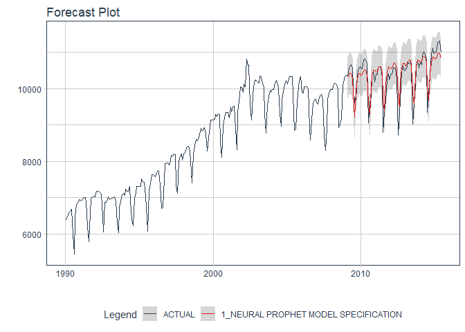

The NEW Neural Prophet arrives to R!
Not on CRAN yet:
#install.packages("neuralprophet")Neural Prophet Algorithm
Using neural_prophet(), which connects to Python NeuralProphet().
library(neuralprophet)
library(tidymodels)
library(tidyverse)
library(timetk)
m <- m4_monthly %>% filter(id == "M750")
splits <- initial_time_split(m)
model_fit_nprophet <- neural_prophet(
freq = "M",
growth = "linear",
trend_reg = 3,
learn_rate = 0.1,
changepoint_range = 0.8,
seasonality_mode = "additive"
) %>%
set_engine("prophet") %>%
fit(value ~ ., training(splits))
# Forecast with 95% Confidence Interval
modeltime_table(
model_fit_nprophet
) %>%
modeltime_calibrate(new_data = testing(splits)) %>%
modeltime_forecast(
new_data = testing(splits),
actual_data = m,
conf_interval = 0.95
) %>%
plot_modeltime_forecast(.interactive = FALSE)
Installation
There are 2 key components to installing neuralprophet:
Download the R-Package,
neuralprophet. This installs the R-Bindings, which allows you to interface with NeuralProphetSet up the Python Environment so
neuralprophetcan connect to theneuralprophetpython package.
Step 1 - Download & Install neuralprophet
Download the latest development version.
remotes::install_github("AlbertoAlmuinha/neuralprophet")Step 2 - Python Environment Setup
Next, you’ll need to set up a Python Environment that contains at a minimum:
neuralprophet==0.2.7pillow==8.3.0pandas==1.2.5numpypytorch==1.6
The python environment then needs to be activated with reticulate.
Fast Setup
You can use install_nprophet() to prepare and bind to a python environment containing neuralprophet and the required python packages.
- You only need to run this one time, and then you are good to go.
- Each time you load
neuralprophet, the package will include this environment in it’s search process.
# Neural Prophet Installation - Run 1st time
install_nprophet()Step 3 - Restart R and Try an Example
Restart your R session (if in RStudio, close and re-open). Then try this example.
library(neuralprophet)
library(tidymodels)
library(tidyverse)
library(timetk)
m <- m4_monthly %>% filter(id == "M750")
splits <- initial_time_split(m)
model_fit_nprophet <- neural_prophet(
freq = "M",
growth = "linear",
trend_reg = 3,
learn_rate = 0.1,
changepoint_range = 0.8,
seasonality_mode = "additive"
) %>%
set_engine("prophet") %>%
fit(value ~ ., training(splits))
# Forecast with 95% Confidence Interval
modeltime_table(
model_fit_nprophet
) %>%
modeltime_calibrate(new_data = testing(splits)) %>%
modeltime_forecast(
new_data = testing(splits),
actual_data = m,
conf_interval = 0.95
) %>%
plot_modeltime_forecast(.interactive = FALSE)Troubleshooting Installation
Python Environment setup is always fun. Here are a few recommendations if you run into an issue.
Check to make sure Conda or Miniconda is available using
reticulate::conda_version(). If no conda version is returned, then usereticulate::install_miniconda()to install Miniconda (recommended vs full Aniconda). Then (re-)runinstall_gluonts().Check if Neural Prophet (Python) is available using
reticulate::py_module_available("neuralprophet"). If this returnsTRUE, then your installation has succeeded in building the environment, but you may have other issues like missing C++ build tools (next).Windows 10 error: Microsoft Visual C++ is required. Here are the instructions for installing the C++ tools needed.
Other installation issues. Please file a GitHub issue here.